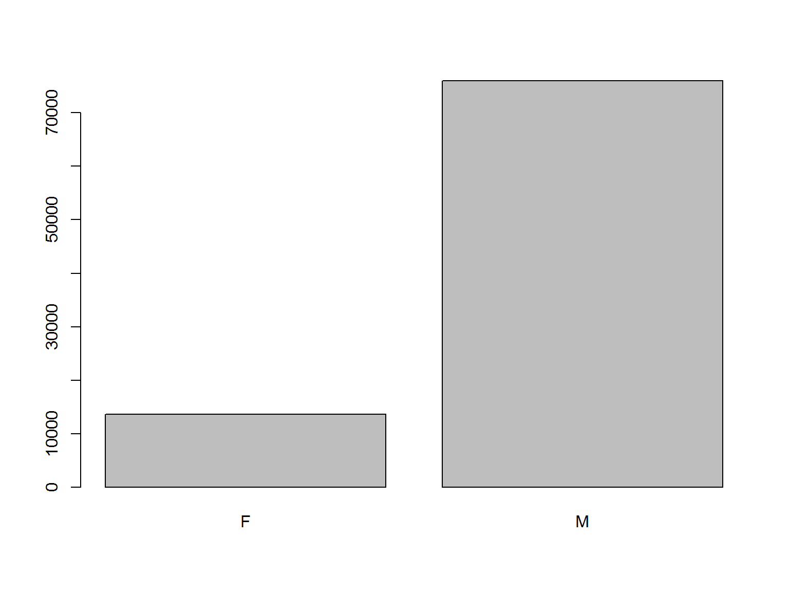
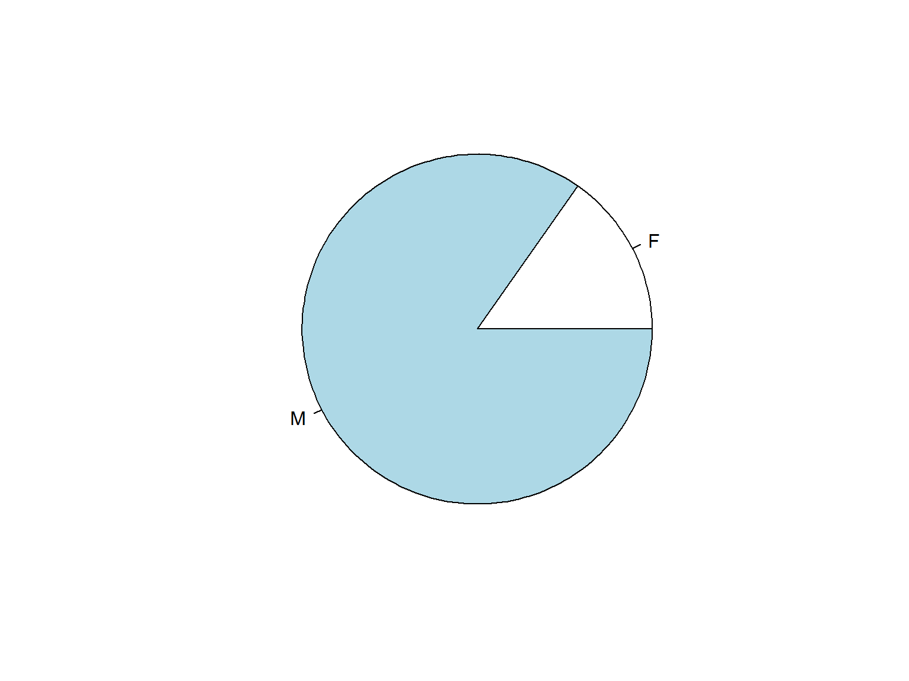
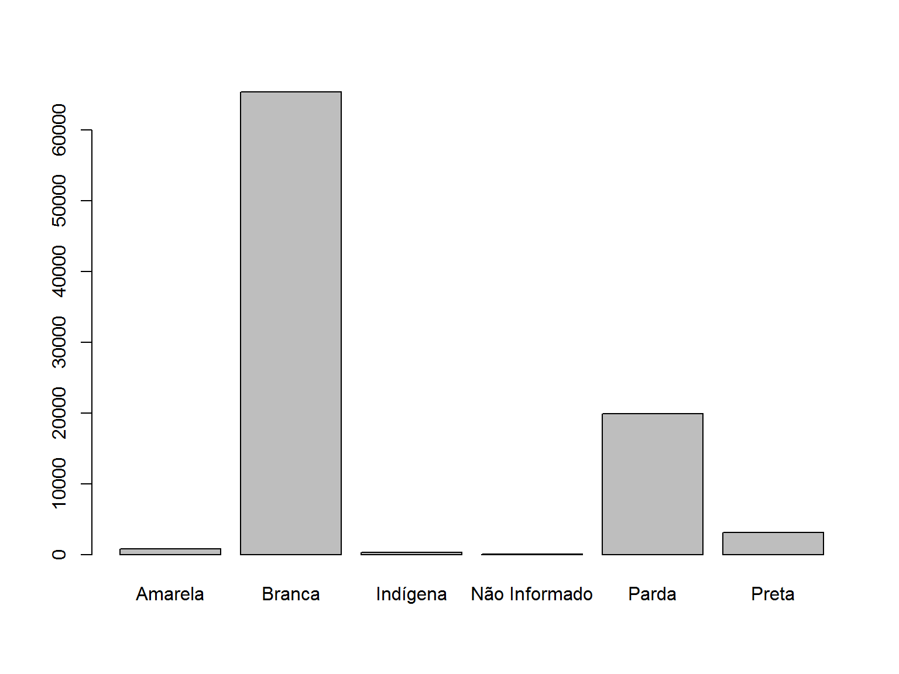
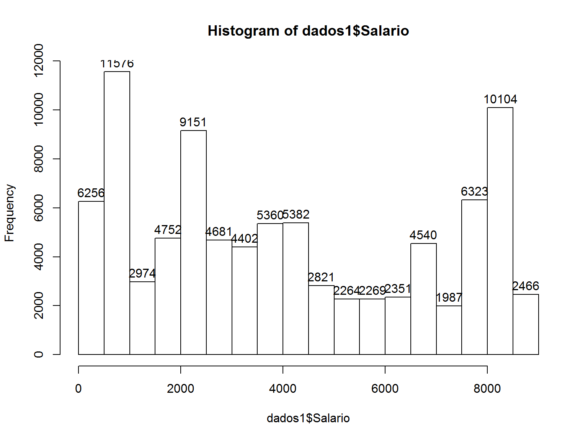
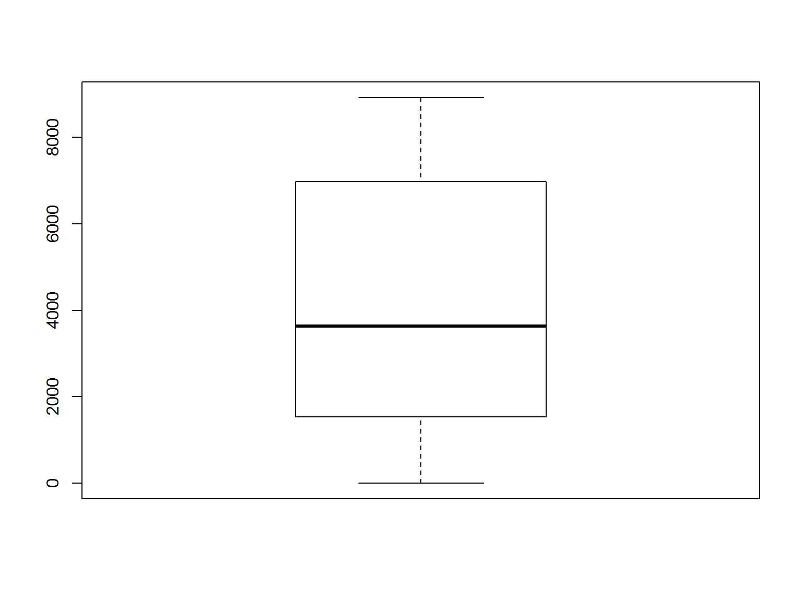
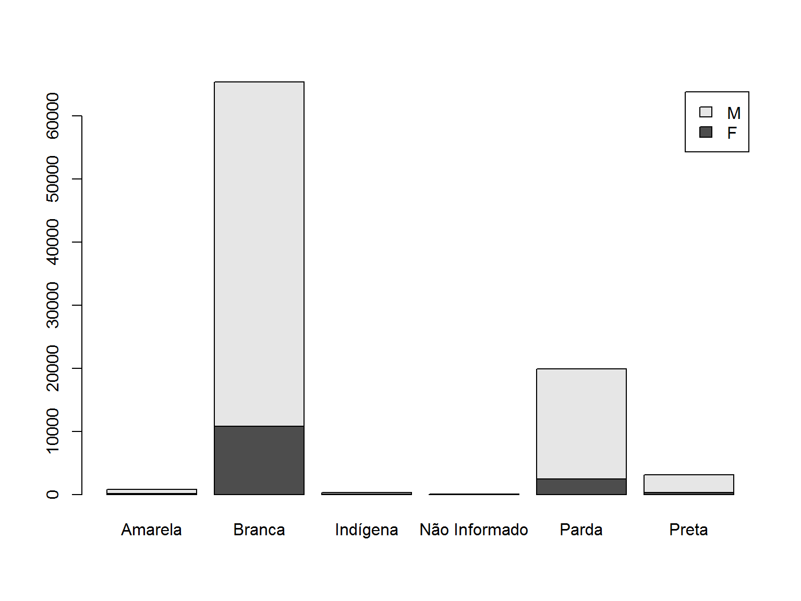
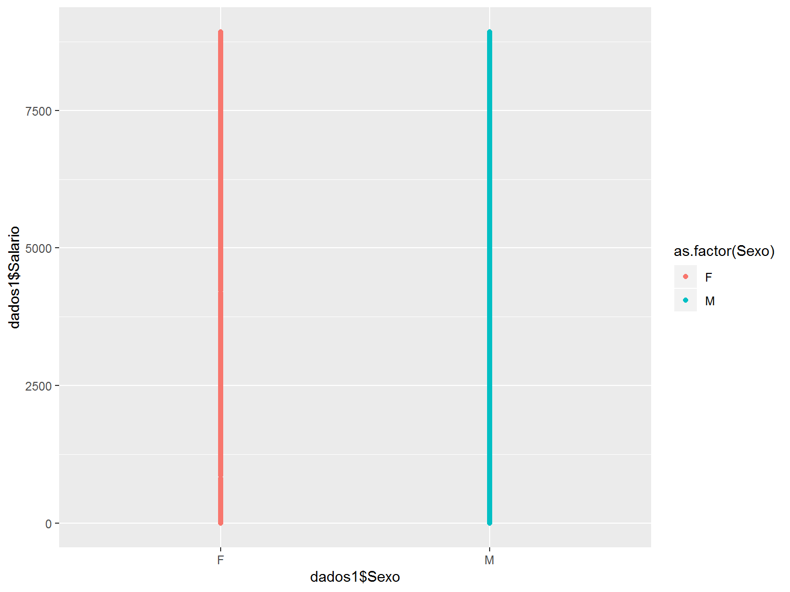
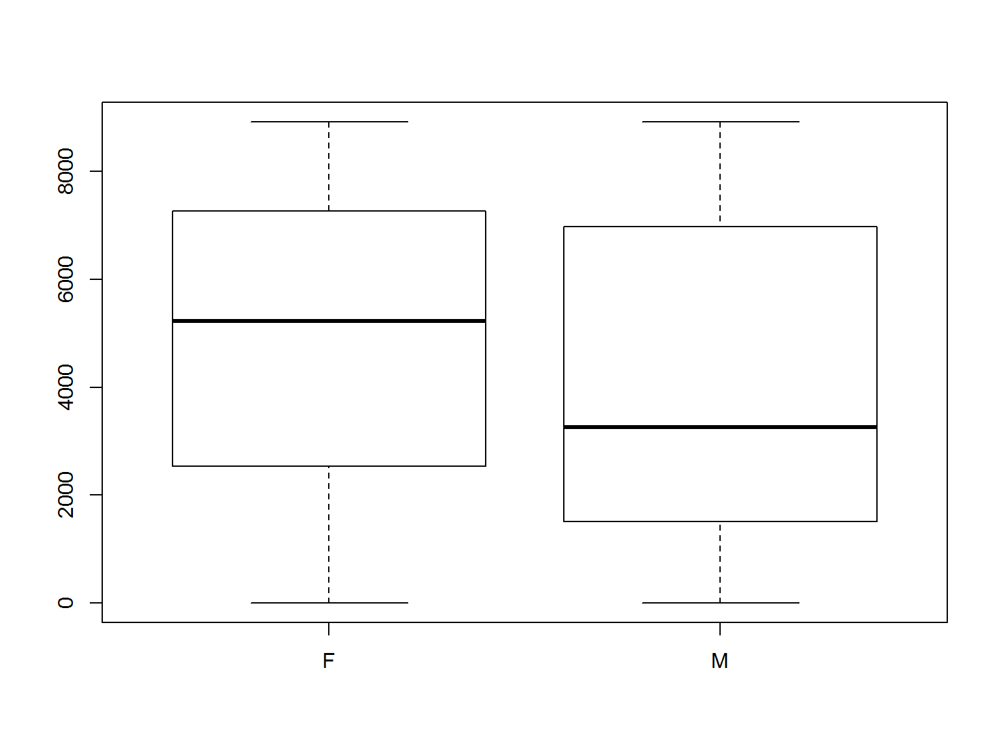
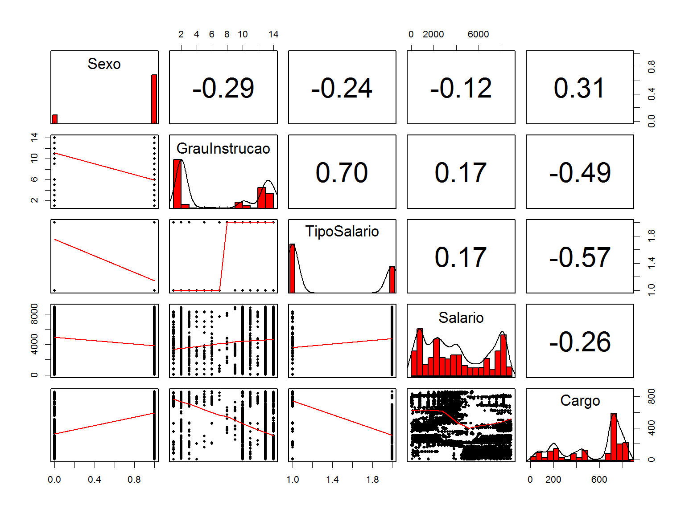
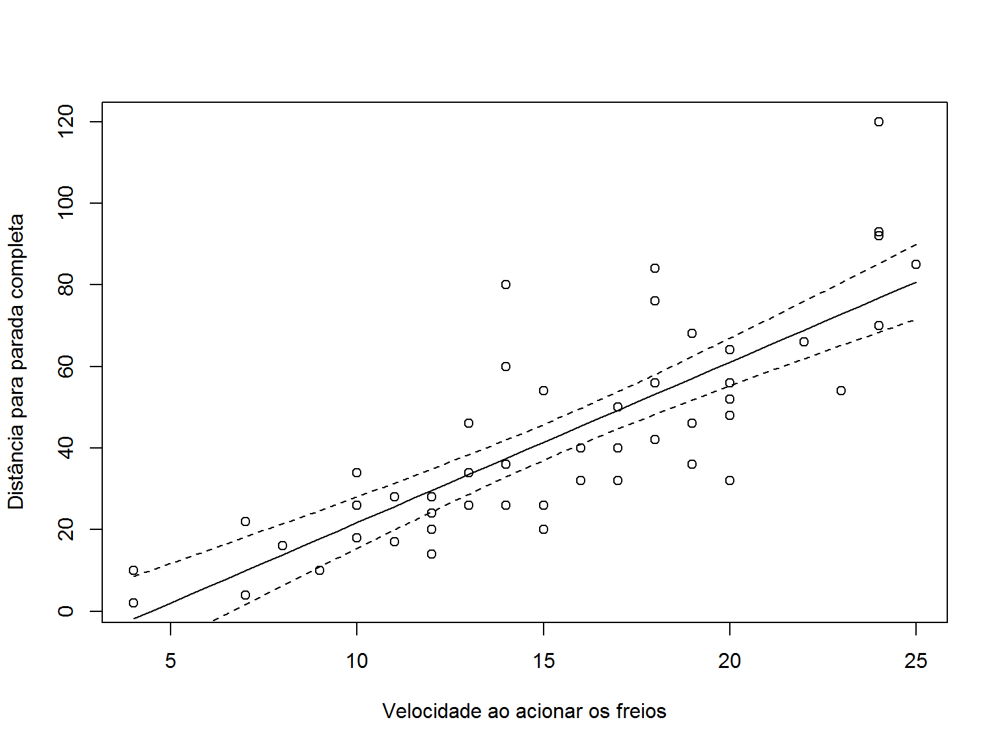

Maria Oliveira
Janeiro, 2020
AGENDA
O QUE É O R?
- Orientada a objetos:
Tudo no R é um objeto…- R-Studio: um ambiente para facilitar o uso do RCorrelação
Covariância
Correlação
Regressão
R - Dia 1
setwd(“~/comp&ben”)
2) Pelo menu do RStudio em Session > Set Working Directory > Choose Directory…
Confira o diretório que está trabalhando com a função
getwd()
O R como uma calculadoraO símbolo > indica que o R está pronto para receber um comando: 2 + 2
Para adicionar comentários ao script, utiliza-se o símbolo # antes do texto e/ou comandos. O que estiver depois do símbolo não será interpretado pelo R. Portanto:
2 + 2 esta linha será executada
#2 + 2 esta linha não será executada
| operador | significado |
|---|---|
| + | adição |
| - | subtração |
| * | multiplicação |
| / | divisão |
| ^ | potência |
| exp() | exponencial |
| sqrt() | raiz quadrada |
| factorial() | fatorial |
## [1] 2 7 5 10Para pesquisa: ?runif ou help(runif)
Criando função:
## Olá mundoOBJETOS
O símbolo <- é chamado de operador de atribuição. Ele serve para atribuir valores a objetos, e é formado pelos símbolos < e -, obrigatoriamente sem espaços.
VETOR
Usando a função c() para criar vetores:
O R possui 5 classes básicas de objetos, também chamados de objetos “atômicos”:
Os operadores lógicos utilizados no R são:
| Símbolo | significado |
|---|---|
| < | menor |
| <= | menor igual |
| > | maior |
| >= | maior igual |
| == | igual |
| != | diferente |
| & | e |
| | | ou |
seq(1,10)
1:10
seq(from = 1, to = 10, by = 2)
a <- seq(from = 1, to = 10, length.out = 15)
print(a, digits=3)
rep(1, 10)
rep(c(1, 2, 3), 5)
rep(c(1, 2, 3), each = 5)
num <- c(10, 5, 2, 4, 8, 9)
num
num * 2
num * num
num + c(2, 4, 1)## [,1] [,2] [,3] [,4]
## [1,] 1 4 7 10
## [2,] 2 5 8 11
## [3,] 3 6 9 12## [,1] [,2] [,3] [,4] [,5]
## A 1 4 7 10 99
## B 2 5 8 11 99
## C 3 6 9 12 99## [1] 4da <- data.frame(ano = 2000:2004,
prod = c(32, 54, 25, 48, 29))
class(da)
dim(da)
str(da)
row.names(da)
colnames(da)INDEXAÇÃO E SELEÇÃO CONDICIONAL
Existem três tipos de operadores que podem ser usados para indexar (e selecionar) sub-conjuntos (subsets) de objetos no R
Indexação de Data-frames
da <- data.frame(A = 4:1, B = c(2, NA, 5, 8))
da
da[1,]
da$A
da$B[3]
da[!is.na(da$B), ]
complete.cases(da)
da[complete.cases(da), ]
with(da,A)
with(da,B[3])
#Seleção condicional
dados <- c(5, 15, 42, 28, 79, 4, 7, 14)
dados[dados>15]
dados[dados>15 & dados<=42]
cara <- letters[1:length(dados)]
dados[cara=="c"]
dados[cara%in%c("a","c")]
cara[dados==15]
## Elemento de cara onde dados for igual a 4 ou 14
cara[dados %in% c(4, 14)]
which(dados>15)Seleção condicional em data-frames
dados <- data.frame(ano = c(2001:2005),
captura = c(10:13,NA),
porto = c("SP", "RS", "SC", "SC", "RN"))
dados[dados$ano==2004, ]
dados[dados$porto=="SC", ]
dados[dados$captura>13, "captura"]
dados[dados$captura>12 & !is.na(dados$captura), ]
subset(dados, porto=="SC")
subset(dados, captura > 11, select = captura)Entrada e saída de dados no R
##y <- scan()
x <- scan(what = "character")
texto <- readLines(n=1)
fn <- function() {
cat("Digite o nome do time de futebol de sua preferência (em letras minúsculas)\n")
time <- readLines(n = 1)
if (time == "coritiba")
cat("BOA ESCOLHA!!!\n")
else cat("Ihh, tá mal de escolha...\n")
return(invisible())
}
##fn()A função read.table()
dados <- read.table("C:/Users/Maria/Documents/Maria/cnh/curso/idade.csv", header = TRUE, sep = ";", dec = ",")
getwd()Argumentos:
str(dados1)
names(dados1)
civil.tb <- table(dados1$Sexo)
civil.tb/length(dados1$Sexo)
barplot(civil.tb)


names(civil.tb)[which.max(civil.tb)]
median(as.numeric(dados1$Salario, na.rm=TRUE))
mean(as.numeric(dados1$Salario, na.rm = TRUE))
dados1$Salario <- as.numeric(dados1$Salario)
var(dados1$Salario, na.rm = TRUE)
sd(dados1$Salario, na.rm = TRUE)
quantile(dados1$Salario, na.rm=TRUE)
max(dados1$Salario, na.rm=TRUE)
min(dados1$Salario, na.rm=TRUE)


library(ggplot2)
ggplot(dados1) +geom_point(aes(x= dados1$Sexo, dados1$Salario, colour = as.factor(Sexo)))

levels(dados1$Sexo)
dados1$Salario <- as.numeric(dados1$Salario)
dados1$Sexo<-ifelse(dados1$Sexo=="M", 1,0)
with(dados1, cor(Salario, Sexo))
cor.test(dados1$Salario, dados1$Sexo)
names(dados1)
library(psych)
pairs.panels(dados1[ , 9:13],
method = "pearson",
hist.col = 2,
density = TRUE,
ellipses = FALSE,
pch = 20,
lwd = 0.01
)
Estruturas de repetição
names(dados1)
dados1[,c(1, 2, 3, 4:20)]
dados2 <- subset(dados1, select=c(1,2:10, 19, 11:20))
dados2$Salario <- as.numeric(dados2$Salario)
apply(dados2[, 10:11], 2, mean)## Warning in mean.default(newX[, i], ...): argument is not numeric or logical: returning NA
## Warning in mean.default(newX[, i], ...): argument is not numeric or logical: returning NAcars
summary(cars)
## Ajuste do modelo
mod <- lm(dist ~ speed, data = cars)
summary(mod)
pred <- data.frame(speed = seq(4, 25, by = 0.5))
ypred <- predict(mod, newdata = pred, interval = "confidence")
pred <- cbind(pred, ypred)
pred
plot(dist ~ speed, data = cars,
xlab = "Velocidade ao acionar os freios",
ylab = "Distância para parada completa")
with(pred,
matlines(x = speed, y = cbind(fit, lwr, upr),
lty = c(1, 2, 2), col = 1))